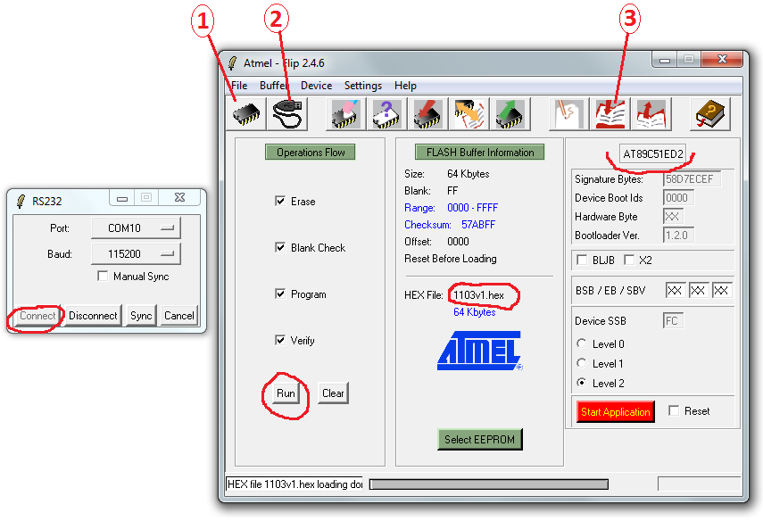

↑
Прошивка ДКР-АТ1103М
- Подключить дозиметр к USB адаптеру (адаптер к USB пока не подключать)

- Замкнуть на контроллере землю (22-й вывод, например) и PSEN (32-й вывод).
А лучше зажать кнопку звука
- Подключить адаптер к USB, при этом будет слышен звуковой сигнал. Кнопку можно отпустить
- Запустить Flip
- Выбрать тип контроллера[1]
- нажать[2], выбрать порт, нажать "Connect"
- Выбрать прошивку[3] — 1103v1.hex
- Нажать "Run"

- После окончания прошивки снять флаг BLJB (если стоял)
и поставить Level2

- Если выскочила такая ошибка:

- ХЗ, что такое, единственно найденное 100% решение — перезагрузить комп и перепрошить,
после перезагрузки ошибка больше не появляется